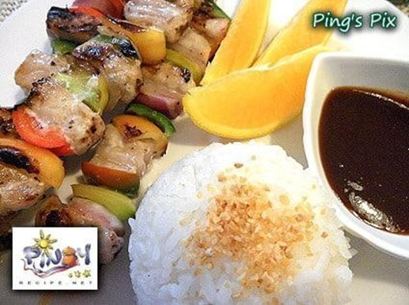

MALASUGI ( SWORDFISH ) KEBAB
What is MALASUGI ( SWORDFISH ) KEBAB?
There are many variants of kebab like beaf kebab, mutton kebab, chicken kebab, vegetable kebab and this fish kebab. In Southeast Asia fish kebab is very famous. Fish kebab is very spicy and a delicious recipe. Malasugi ( Swordfish ) Kebab Recipe is an easy to make dish, ready just in 15-20 minutes.
Ingredients
1/2 kilo fish Malusugi or Swordfish (you can also use halibut or salmon)
2 tbps olive oil or just plain cooking oil
1 pc. lemon
6 pcs medium sized tomato
4 pcs small sized bell pepper
4 pcs small sized onions or shalots
Salt to taste
10 pcs wooden skewers
1 tsp. crushed black pepper
Instructions / How to Cook
1. Wash and skin fish. Cut fish, bell pepper, tomatoes, onions into skewer able pieces of about 40 mm.
2. Thread fish pieces, bell pepper, tomatoes, onions on skewers.
3. Put salt, black pepper and olive oil onto the skewed kebab.
4. Spray the grill lightly with olive oil and place the fish kebab on the stove top grill.
5. Cook for 5-6 minutes each sides or until the fish flakes easily with a fork.
6. Fish kebab is ready to serve. Garnish by thinly sliced lemon.
7. Serve hot with garlic rice, with tomato ketchup or steak sauce.